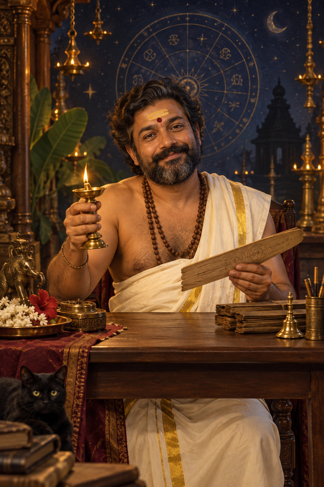

☾ KTU Jathakam
SUPPLY UNDO · ദിവ്യ പരിഹാര കേന്ദ്രം
Supply Undo എന്ന് നോക്കാനുള്ള ജാതകമിട്ട്
റോൾ നമ്പർ അടിച്ചാൽ മതി. നിന്റെ സെമസ്റ്ററിലെ ഗ്രഹനിലയും, KTU ദോഷങ്ങളും, രക്ഷപ്പെടാനുള്ള പരിഹാരങ്ങളും പൂജാരി പറഞ്ഞുതരും.
🏫 College Jathakam നോക്കണോ? →* 100% random(), 100% ഭയങ്കര വിശ്വസനീയം.

“നിന്റെ മാർക്ക് ലിസ്റ്റിൽ ഞാൻ ചില നിഴലുകൾ കാണുന്നു…”